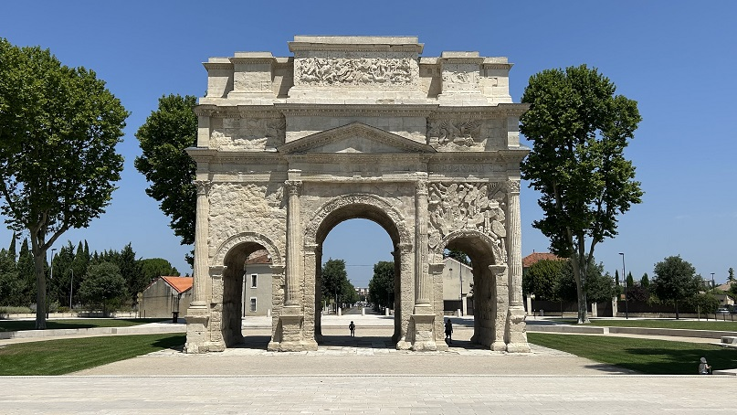
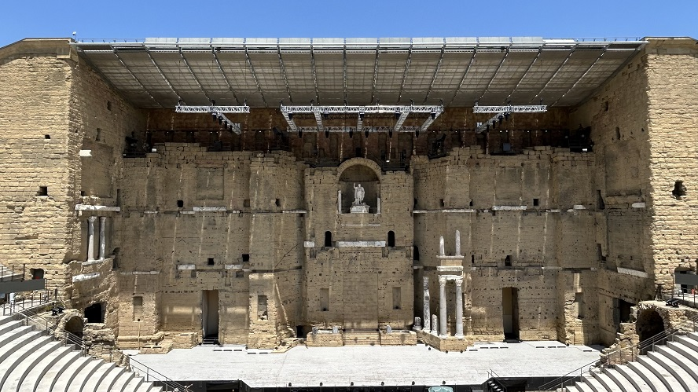
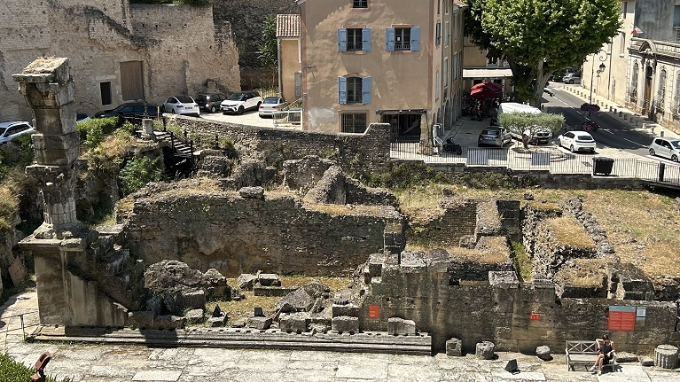

|
O R A N G E
Orange era una antigua ciudad Celta. Fue fundada en el año 35 a.e.c. por los veteranos de la segunda legión gálica como Arausio (dios de las aguas celta), en el territorio de la tribu gala de los Tricastini. Tomó el nombre de Colonia Julia Firma Secundanorum Arausio. Fue saqueada por los visigodos en el año 412. De época romana destacamos el Arco
del Triunfo que fue construido en época de Augusto, para honrar a
los veteranos de las guerras de las Galias y la Legio II Augusta. Fue
posteriormente reconstruido por el emperador Tiberio. Tiene tres arcos.
Toda la estructura mide 19,57m de largo por 8,40m de ancho, alzándose
hasta una altura de 19,21m. Cada fachada tiene dos columnas corintias
adosadas. De los arcos con este diseño que han llegado hasta la
modernidad, este es el más antiguo.

El Teatro romano de Orange fue
construido por Augusto a finales del siglo I a.e.c, es uno de los
teatros romanos mejor conservados del mundo. Se conserva el muro de la
fachada escénica que mide 103m de largo por 37m de alto y 1,8m de ancho.
Con una capacidad para unos 9.000 espectadores. Restaurado durante el
siglo II, los relieves del proscaenium son de la época de Adriano. Fue
clausurado en el año 391 por la Iglesia.Tras el abandonado sufrió
pillajes y saqueos por los pueblos bárbaros. En la Edad Media sirvió de
puesto de defensa, como viviendas, …

Al oeste del teatro se encuentran los vestigios de un Ninfeo. Se cree que se trata de un templo, del siglo II, dedicado a las ninfas. Se la conoce tradicionalmente como «la habitación de la cortesana».

No olvidar visitar el Museo de Arte e Historia de Orange; ubicado en un palacete del siglo XVIII. Uno de sus principales objetos es el catastro romano del siglo I.
Más info: Théâtre Antique d'Orange - Página web oficial
|